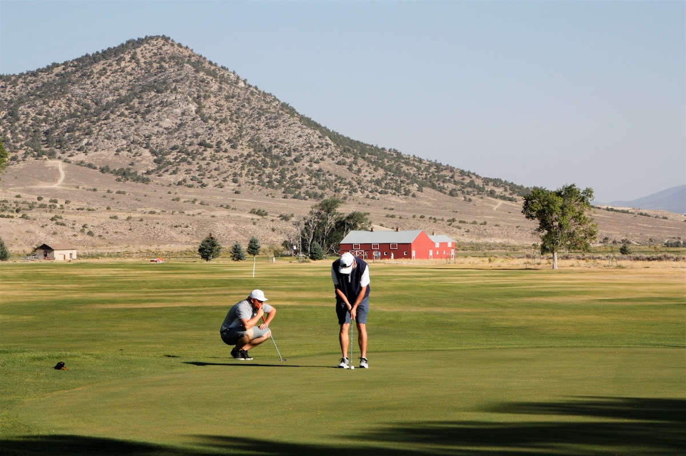
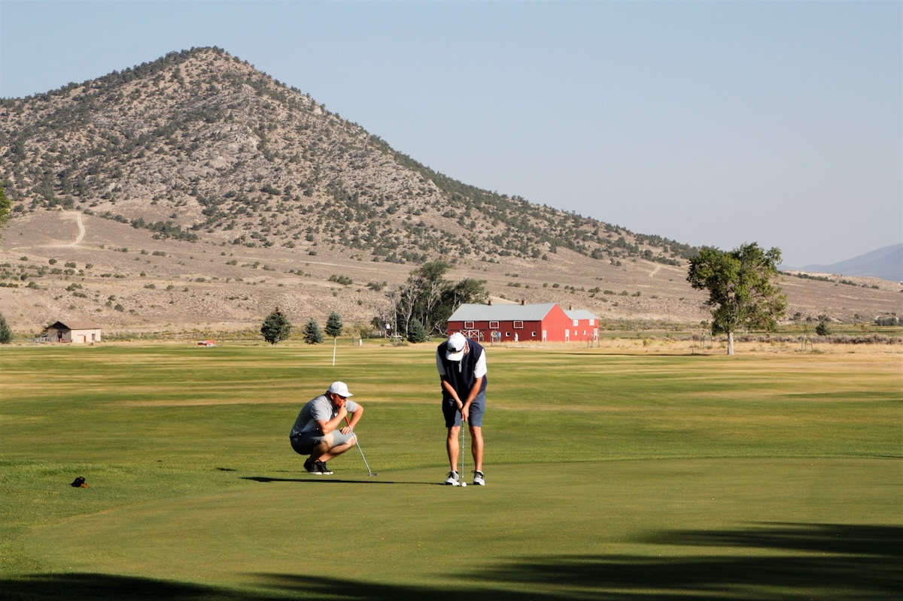

No Tee Times, No Dress Codes,
No Stress
Don’t expect to run into too many people at White Pine Golf, and
at 6,500 feet above sea level the temperatures stay cooler in
the summer time, the ball travels a little farther and the
course stays in great shape.
Located just off Nevada Hwy 93 north of town, travelers from
Las Vegas, Idaho, Utah and Reno all pass by the course built
on the historic Georgetown Ranch. Beautifully restored red
barns and towering mountains provide a striking backdrop for
play, and part of the front 9 runs along the train yard for
the Nevada Northern Railway. White Pine Golf Course offers a
full-service pro shop, club house, driving range and events
throughout the playing season.
 
